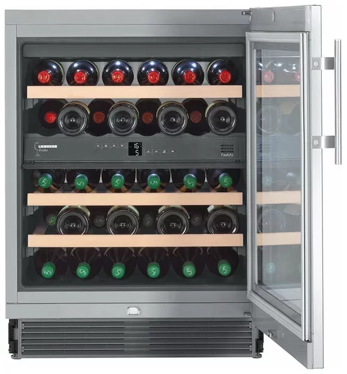

Винный шкаф UWTES 1672 VINIDOR

Описание товара:
Винный шкаф Liebherr UWTes 1672 Vinidor в стальном корпусе может размещаться под столешницей благодаря
высоте 82 см и ширине 60 см. Две температурные зоны позволяют раздельно выбирать условия для
хранения различных сортов вин.
Преимущества винного шкафа
- Световая сигнализация открытой дверцы
- Динамическая система охлаждения
- Отключаемое светодиодное освещение
Доставка: бесплатная доставка по Могилёву или по Беларуси от 30 руб
до квартиры.
Характеристики товара:
| Цвет: |
серебристый |
| Количество бутылок: |
34 (0,75 л) |
| Количество полок: |
5 |
| Полезный объём холодильной камеры: |
94л |
| Регулировка температуры: |
8 — 18°C |
| Материал полок: |
дерево |
| Дверь: |
стеклопакет |
| Вентилятор: |
есть |
| Ширина/Глубина/Высота/Вес: |
59.7 см/57 см/86.6 см/49 кг |
Подробное описание товара:
Встраиваемая модель, выполненная в цвете нержавеющей стали, способна вместить
до 34 стандартных бутылок объемом 0,75 литра. Дверца в стальной раме с двойным
стеклопакетом успешно защищает вино от ультрафиолетовых лучей. Дверные петли находятся справа, при
установке они могут быть перенесены на левую сторону. Компрессор с пониженным уровнем шума оснащен также
функцией гашения вибрации. Управление параметрами работы производится при помощи электронных кнопок
и ЖК-дисплея MagicEye с цифровой индикацией температуры. Для очистки воздуха от посторонних примесей
применяется сменный фильтр из активированного угля. Три решетчатые полки изготовлены из натурального
дерева, для их легкого извлечения предусмотрены телескопические направляющие. Дверца оснащена встроенным
замком, панель управления блокируется от детей.
Цена: 9802 BYN